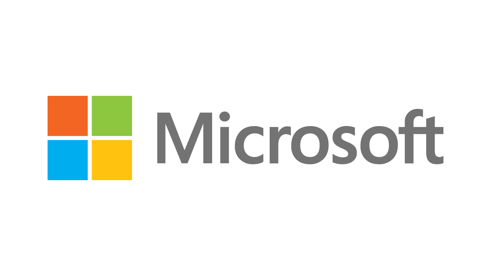

Microsoft 48th Birthday
Microsoft marks forty-eight years since it was first founded on 4th April 1975, originally as Micro-Soft. It would be nearly sixteen years later when I first heard of Microsoft here in the United Kingdom, when I used MS-DOS 3.30 on the Toshiba T-1200 Laptop that my Dad had saved from being thrown out by British Rail at the time. Another thing that came with what was being thrown away was GW-BASIC, also developed by Microsoft and there started my very first experience of programming for and with a Microsoft product, and I was hooked!
Microsoft GW-BASIC allowed me to write many different things including simple applications and game. From there this inspired me in the late 1990s to get Visual Studio with Visual Basic 5 on Windows 95 and Windows 98. I then proceeded on to Visual Basic 6 and Visual Basic .NET on Windows XP at the turn of the millennium and used it to create my own projects using Windows Forms as well as for work in the early 2000s on Windows Server for the web with ASP.NET until the mid-2000s when I was working with Windows Presentation Foundation on Windows Vista and Silverlight for the web. This then took me to Windows Phone when I switched to using C# and created my own applications, including one which exclusively brought the Zune Card features of the Zune Music service to Windows Phone.
Microsoft by the mid-2000s was a major focus not only for professional and personal development projects but also had my own website where I shared my passion for Zune along with Xbox and more, sharing details of products they announced during that time from Xbox 360 to the Zune HD and allowed me to share my passion for Microsoft with a wider audience gaining many thousands of visitors to see the content I was producing at the time which later included projects using Windows 8 and Windows 10. Today, in the era of Windows 11, I again have my own website where I share articles such as this and more about Microsoft and their products along with tutorialr.com where I have shared many tutorials and workshops, which almost all of them focus on Microsoft of their products. I've also presented many times at many conferences and user groups throughout the North East of England and around the country.
Microsoft made a big impression on my professional and personal life, taking me to places and allowing me to do things I don't think I'd have been able to do any other way. A particular highlight was back in 2012 when I was able to go the Microsoft Build conference in Seattle. I'd saved up money to pay off my student loan but realised I couldn't miss out so put it towards that, and paid that off much later instead! Going to the Microsoft Campus was amazing, something I'll never forget, it was fantastic to see all the sessions and meet the people I'd only known from presentations I'd seen online up until that point as well as meet so many amazing people that I'd never have met any other way. Every attendee received a Surface RT and a Nokia Lumia Windows Phone, which was fantastic, but I also made the most of Seattle, taking time to visit the Space Needle along with the Museum of Flight, Boeing Factory and more! It is great to see Microsoft celebrate forty-eight years since it was founded, and know it has had a profound impact on the technology sector and still continues to do so, founded on innovation to make software a product that could be sold to today where software dominates all our lives and continues to improve year after year and to know the impact it had on me as a developer and as a person cannot be understated, so from me to them, happy birthday Microsoft!